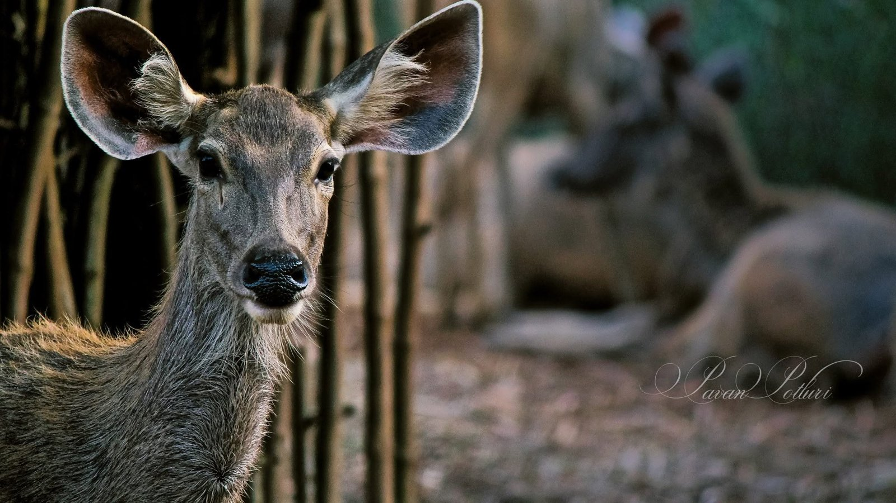

Projects


What I'm building now.
Twenty-one years in film VFX, seven of them at Sony Pictures Imageworks, now poured into a game, a school, a set of tools, my photography and hands-on consulting.
Game
SP Creek
A gentle, hand-painted 3D valley for children that plays right in the browser. Open to partners and investors.
See SP Creek →
School
PKP School
Compositing and AI-assisted creative pipelines, taught from real production. Free lessons first, then short paid courses.
See the lessons →
Tools
PKP Studio Tools
Step Narrator, Style Track, Painting Studio and Paper Cut Studio: desktop tools built for my own productions.
See the tools →
Photography
Photography
Portraits, families and places from my own camera, alongside work by creators using PKP Studio.
See the photographs →Consulting
VFX consulting and reel reviews
Senior VFX supervision by the day, the week or the project. Shot problems, pipelines, bids, delivery QC and honest reel feedback.
Book a free call →